Stable Diffusion
opción 1 
opción 2 
opción 3 
opción 4
48 × 48opción 1 opción 2 opción 3 opción 4
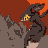
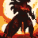
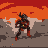
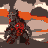
La ceniza no deja respirar a los que pelean de cerca




Lluvia de fuego: las flechas se queman en el aire


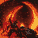
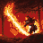
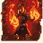
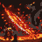
Un terremoto voltea las máquinas de asedio


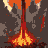
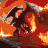
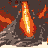
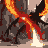
Golem de magma


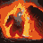
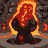
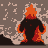
Portaestandarte de Arx Infera


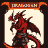
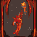
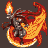
Desgarrador abisal


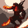
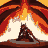
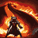
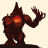
Asesino escamoso


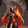
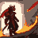
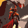
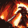
Furia abrasadora


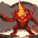
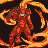
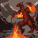
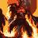
Cerbero volcánico: guardián de las puertas de Arx Infera


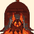
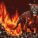
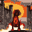
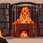
Guardián de obsidiana


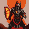
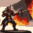
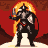
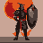
Sabueso de lava


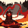
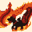
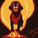
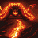
Salamandra de fuego


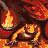
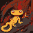
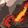
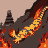
Mago de llamas


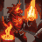
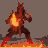
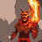
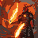
Ballestero de virotes ardientes


Chispa eterna: se desprende de las llamas eternas del volcán y pelea por ellas


Dragón alado menor: escupe fuego desde el cielo


Hondero de piedra volcánica


Alquimista del azufre: lanza frascos que estallan en llamas


Aprendiz de fuego


Invocador de erupciones


Onagro de magma: lanza rocas fundidas


Ariete de basalto


Tarasca: dragón de caparazón ardiente que derriba murallas


Horno de guerra: un fogonero lo alimenta y dispara proyectiles de magma


Gigante de piedra: lanza rocas volcánicas


Zapador de túneles


Señor de Arx Infera


Sacerdotisa de las llamas eternas


Renace de las cenizas


Llamado del volcán: acuden nuevos guerreros


Rosales de espinas atrapan a los que pelean de cerca


Un remolino de hojas desvía las flechas y tapa la vista


Las raíces brotan del suelo y traban las máquinas


Oso de Galadloth


Escudero de corteza


Hachero de roble


Espadachín de espinas


Jinete de ciervo


Guardián de raíces


Lobo del bosque


Alfil de hiedra


Artífice del musgo


Arquero del Gran Árbol


Águila de las copas


Cantora de niebla


Arquera de sauco


Tirador de espinas


Enjambre de Galadloth


Arquero enraizado


Cantor de la tierra: su canto agrieta el suelo bajo las líneas enemigas


Lanzador del sauce sur


Lanzasemillas: las semillas revientan en enredaderas


Catapulta de abedul: un árbol doblado que lanza rocas


Ariete de batalla


Lanzador de savia: la savia pegajosa traba las máquinas enemigas


Trampa de hiedra: estacas cubiertas de hiedra en el camino


Princesa de los Lothrim


Druida de Galadloth


Raíces ladronas: brotan del suelo y se llevan bajo tierra a la criatura que más energía emana


Regalo de la flor de loto: Galadloth hace nacer guerreros nuevos


Púas de hierro en el suelo: nadie avanza


Cortina de humo: los arqueros no ven el blanco


Inundan el campo: las máquinas se hunden en el barro


Falange de Siderópolis


Escudero de bronce


Maestro antiguo: entrena a los efebos, nunca fue derrotado


Moloso de guerra: rompe la formación enemiga


Espadachín de hoja curva


Toro acorazado: bestia domada


Jinete arriero: conduce a las bestias de guerra


Piquera: la pica más larga de Siderópolis


Recluta mañoso


Arquero de Siderópolis


Ballestero: tensa su ballesta apoyándola en el vientre


Hondero de plomo


Jabalinero


Halcón cazador: se lanza sobre los arqueros enemigos


Lanzador de vasijas incendiarias


Vigía de la muralla


Coloso de hierro: la máquina de guerra más antigua de Siderópolis, oxidada pero todavía en pie


Torre de asedio


Catapulta de torsión: lanza piedras por encima de las murallas


Ballesta gigante: dispara virotes de hierro


Ariete de hierro


Escala de asalto: un puente sobre ruedas que se tiende hasta lo alto de la muralla


Tortuga de asedio: bajo su techo, los zapadores llegan hasta el pie de la muralla


Estratego de Siderópolis


Maestra de ingenieros


Trompeta de guerra: llama a los aliados al combate


Emboscada: una trampa saca de combate a la criatura más fuerte